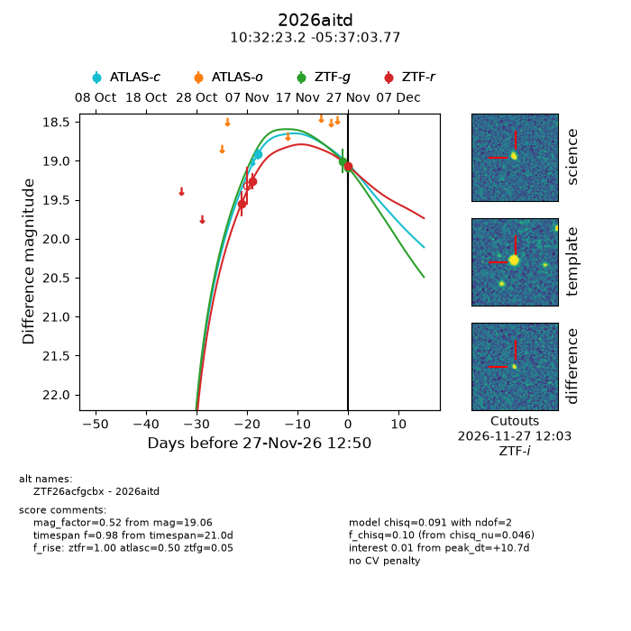
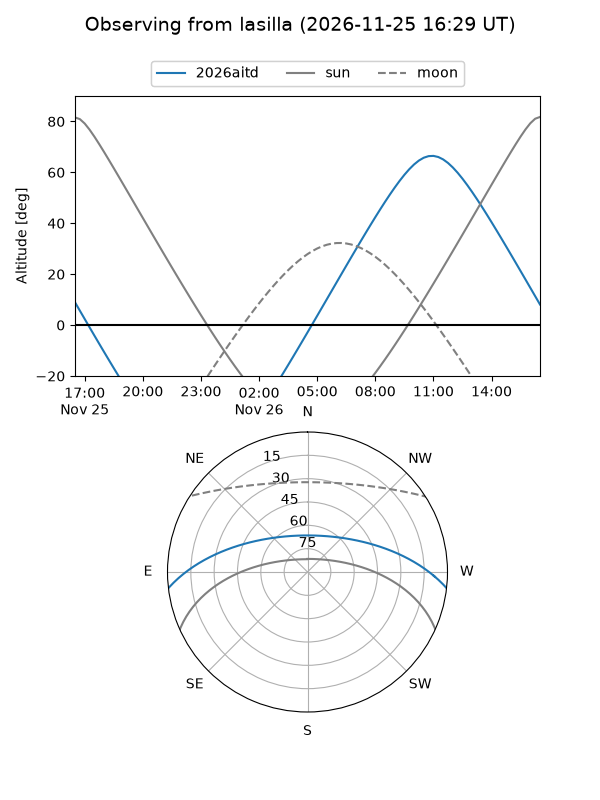
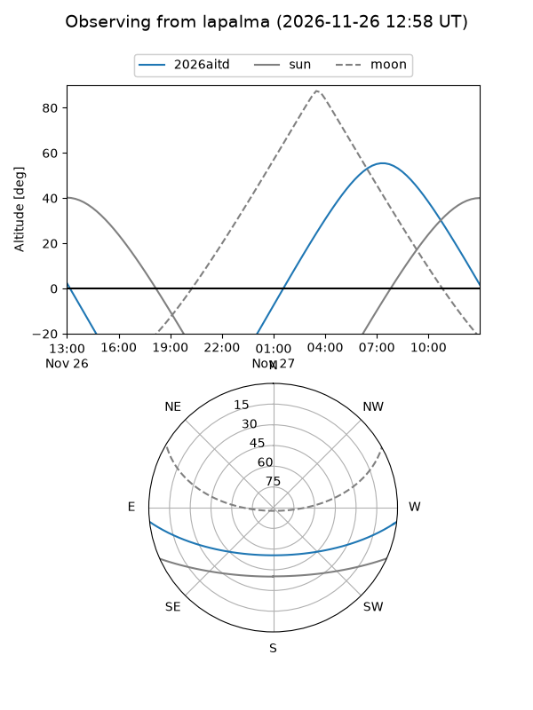
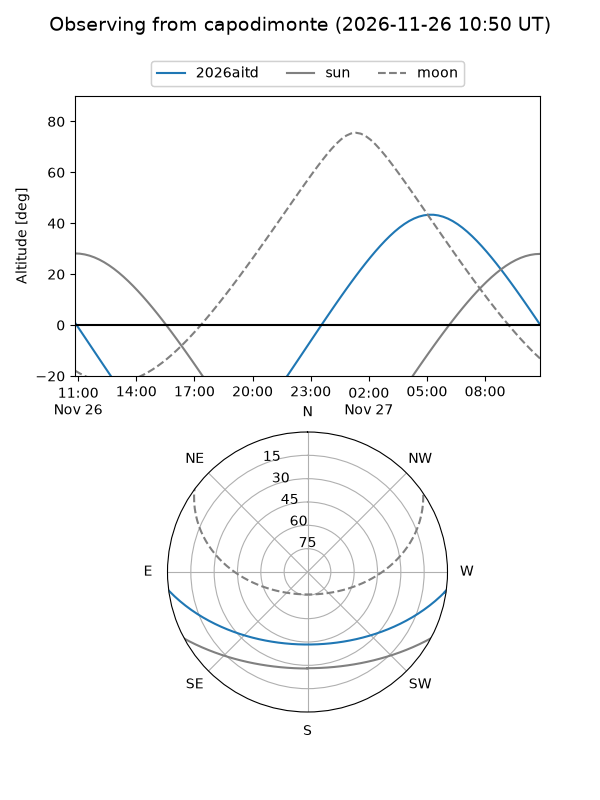
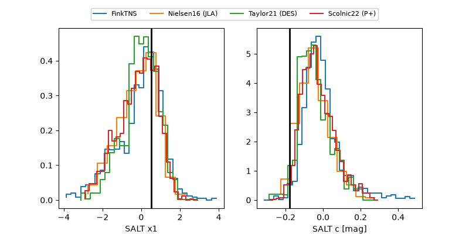

2026aitd
Target 2026aitd at 2026-11-27 12:52
Aliases and brokers:
FINK-ZTF: ztf.fink-portal.org/ZTF26acfgcbx
Lasair-ZTF: lasair-ztf.lsst.ac.uk/objects/ZTF26acfgcbx
ALeRCE-ZTF: alerce.online/object/ZTF26acfgcbx
YSE-PZ: ziggy.ucolick.org/yse/transient_detail/2026aitd
TNS name: wis-tns.org/object/2026aitd
Direct TNS query: direct search
alt names
ZTF26acfgcbx (ztf,fink_ztf)
2026aitd (tns,yse)
Coordinates:
equatorial (ra, dec) = 158.0966,-5.61771
equatorial (HMS+DMS) = 10:32:23.18,-05:37:03.77
galactic (l, b) = (251.9572,+43.07803)
Flags:
peak dt: +10.7
Photometry:
last atlasc=18.92, ztfg=19.09, ztfr=19.06
1 atlasc, 2 ztfg, 3 ztfr detections
Lightcurve

Visibility



Additional plots
